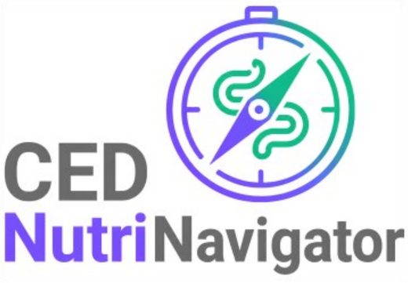

An evidence-based digital nutrition tool for people living with inflammatory bowel disease — developed with patients at Hannover Medical School.
People with Crohn's disease or ulcerative colitis make decisions about food every single day. Will this trigger symptoms? Is fibre good or bad for me? What should I eat during a flare? Clinical appointments rarely have room for those questions, and European guidelines recommend nutritional counselling that most people never actually get.
So the questions get answered by online searching, trial and error, and cutting foods out — which leads to unnecessary restriction, nutritional risk and persistent uncertainty. The CED NutriNavigator translates the existing evidence into guidance that fits a person's situation and can be acted on today.
The app starts with a short self-assessment and then opens three modules, each answering a different kind of question. Screens shown are from the current research prototype — tap any of them to enlarge.
Diagnosis, current disease activity, symptoms, recent weight loss, known intolerances and dietary pattern. This is what makes everything downstream specific to the person rather than generic advice.
Matches established dietary strategies to disease phase and symptoms, ranked by how well each one fits and how strong the evidence behind it is — with recipes that go with the chosen strategy.
An adaptive set of dietary questions — only the ones relevant to the person are asked — compared against what the evidence supports, taking symptoms, disease phase and intolerances into account.
Scan a barcode in the supermarket and get the things that actually matter in IBD: degree of processing, additives and emulsifiers, sugar alcohols, added sugar, lactose — plus a plain-language verdict.
The Navigator is being built with people who live with IBD, not just for them. First we ask what people actually need in interviews; then we evaluate whether the prototype is understandable and genuinely useful in everyday life. Both stages run at Hannover Medical School, together with the DCCV and the Kompetenznetz Darmerkrankungen.
Für die Entwicklung und Bewertung des CED-NutriNavigators suchen wir Erwachsene mit Morbus Crohn oder Colitis ulcerosa. Teilnehmen können Sie, wenn Sie
Die Teilnahme ist freiwillig, erfolgt online und kann jederzeit ohne Angabe von Gründen beendet werden. Die Rekrutierung startet in Kürze — schreiben Sie uns gerne, wenn Sie informiert werden möchten, sobald es losgeht.